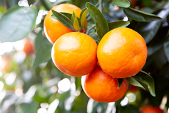

済州ライフ
-
 レジャー産業漢拏山から海まで、見る観光から体験する観光へ済州型レジャー産業、国内外の観光客を魅了する
レジャー産業漢拏山から海まで、見る観光から体験する観光へ済州型レジャー産業、国内外の観光客を魅了する -
 亜熱帯作物産業 2部心を集めると輝く、熱帯および亜熱帯作物の社会的農場「共心彩農業会社法人」韓国の全世帯のうち1.6%に当たる33万は国際結婚家庭だという。国際結婚家庭の構成員は100万名にいたる。熱帯および亜熱帯作物の消費は多文化社会への切り替えをきっかけに徐々に増えている。しかし、いまだに人種差別や結婚移住女性の人権問題など社会問題が後を絶たない。「一緒に集めると輝く」という意味で野菜のヨウサイ(中国名は空心菜だが、共心彩とは韓国語の発音が「コンシムチェ」と同じことから名付けられた)から法人名を作り、済州の結婚移住女性と一緒に食の革新を先導する会社がある。済州における亜熱帯野菜の栽培、流通、体験、加工にいたるまで韓国一の農業会社を目指している「共心彩農業会社法人」がそれだ。
亜熱帯作物産業 2部心を集めると輝く、熱帯および亜熱帯作物の社会的農場「共心彩農業会社法人」韓国の全世帯のうち1.6%に当たる33万は国際結婚家庭だという。国際結婚家庭の構成員は100万名にいたる。熱帯および亜熱帯作物の消費は多文化社会への切り替えをきっかけに徐々に増えている。しかし、いまだに人種差別や結婚移住女性の人権問題など社会問題が後を絶たない。「一緒に集めると輝く」という意味で野菜のヨウサイ(中国名は空心菜だが、共心彩とは韓国語の発音が「コンシムチェ」と同じことから名付けられた)から法人名を作り、済州の結婚移住女性と一緒に食の革新を先導する会社がある。済州における亜熱帯野菜の栽培、流通、体験、加工にいたるまで韓国一の農業会社を目指している「共心彩農業会社法人」がそれだ。


-
 新再生エネルギー産業 1部全世界が注目するグリーン産業のグローバルメッカへの飛躍 「炭素のない島、済州」に向けて進んでいく確かな足取り産業化がもたらした輝かしい遺産は人類に潤沢な暮らしを与えてくれたものの、環境破壊と資源枯渇という問題も残した。異常気象による自然災害が発生するたびに人々の間では「地球が病んでいる」という話がよく話題になる。これは問題の深刻さとこれを改善するための努力の必要性を多くの人が既に認知しているという証拠でもある。無分別な開発と発展で成し遂げる経済成長はもはや美徳ではなく、持続可能性と共存というキーワードが発展の核心として浮上したのである。
新再生エネルギー産業 1部全世界が注目するグリーン産業のグローバルメッカへの飛躍 「炭素のない島、済州」に向けて進んでいく確かな足取り産業化がもたらした輝かしい遺産は人類に潤沢な暮らしを与えてくれたものの、環境破壊と資源枯渇という問題も残した。異常気象による自然災害が発生するたびに人々の間では「地球が病んでいる」という話がよく話題になる。これは問題の深刻さとこれを改善するための努力の必要性を多くの人が既に認知しているという証拠でもある。無分別な開発と発展で成し遂げる経済成長はもはや美徳ではなく、持続可能性と共存というキーワードが発展の核心として浮上したのである。 -
化粧品原料産業 2部美しさが未来の産業動力へ